Kitaibaraki, Ibaraki: things to do, food and stays
Kitaibaraki · Ibaraki
Kitaibaraki
Highlighted on the Ibaraki map.
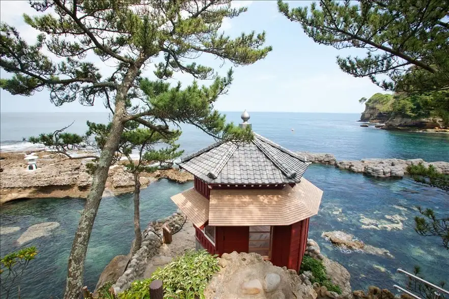
Stay
五浦観光ホテル本館／別館大観荘
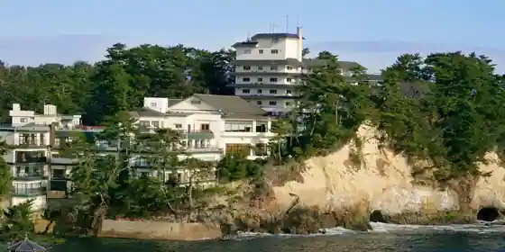
Itsura Kanko Hotel Honkan / Bekkan Daikanso
Inn in Otsu, Kitaibaraki with scenic views.
としまや月浜の湯
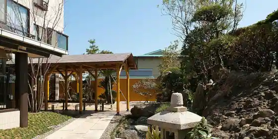
Toshimaya Tsukihama No Yu
Inn at Iyashino Onsen in Isohara, Kitaibaraki.
海音色の宿 偕二ツ島（旧：二ツ島観光ホテル）
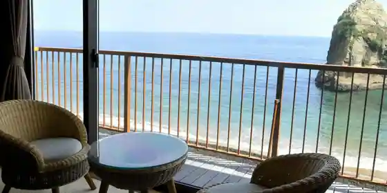
Kaion Iro No Yado Kai Ni Tsu Shima (Kyu : Ni Tsu Shima Kanko Hotel)
Hotel in Isohara, Kitaibaraki with local seafood dinners.
うぐいす谷温泉 絶品あんこう鍋とキンキ煮付の宿 竹の葉
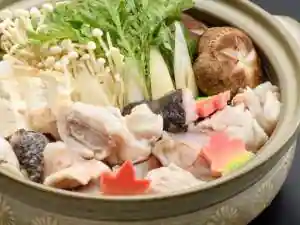
Uguisu Tani Onsen Zeppin Anko Nabe To Kinki Nitsuke No Yado Take No Ha
Inn at Uguisutani Onsen in Isohara, Kitaibaraki with in-room dining.
としまや別荘 海と空と・・・
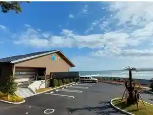
Toshimaya Besso Umi To Sora To
北茨城ロハス 磯原シーサイドホテル
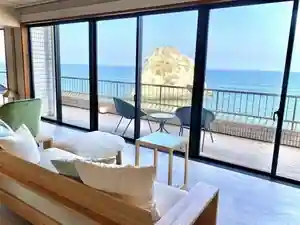
Kitaibaraki Rohasu Isohara Shisaido Hotel
Hotel in Isohara, Kitaibaraki with open-air baths.
海音色の宿 偕二ツ島
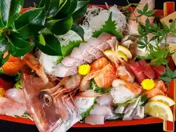
Kaion Iro No Yado Kai Ni Tsu Shima
Inn in Isohara, Kitaibaraki with scenic views.
セントラルホテル磯原
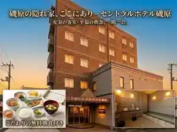
Sentoraru Hotel Isohara
Hotel in Isohara, Kitaibaraki with a large communal bath and family-friendly stays; 1-minute walk from Isohara Station.
ホテルエリアワン北茨城
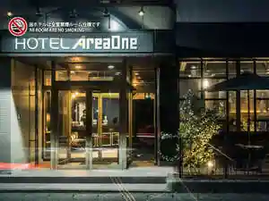
Hotel Eriawan Kitaibaraki
Hotel in Isohara, Kitaibaraki with breakfast available.
グランピングヴィレッジＩＢＡＲＡＫＩ
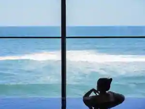
Guranpinguvirejji IBARAKI
Glamping in Isohara, Kitaibaraki with scenic views.
茨城パシフィックカントリー倶楽部 グリーンパークホテル
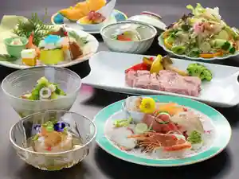
Ibaraki Pashifikkukantori Kurabu Gurin Park Hotel
Hotel in Kanminami, Kitaibaraki with scenic views.
あんこうの宿 まるみつ旅館
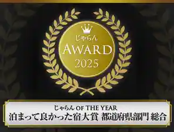
Ankono Yado Marumitsu Ryokan
Dining
魚の宿 まるみつ
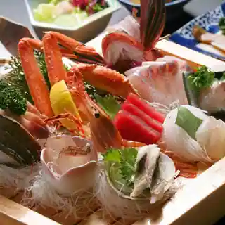
Sakana No Yado Marumitsu
大浜丸 魚力
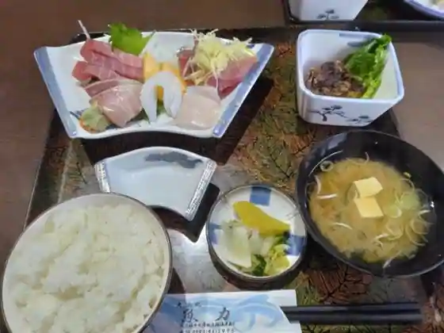
Ohama Maru Sakana Chikara
海鮮料理 食彩 太信
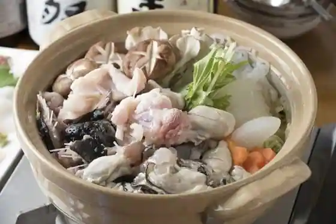
Kaisen Ryori Shokusai Taishin
大津漁協直営市場食堂
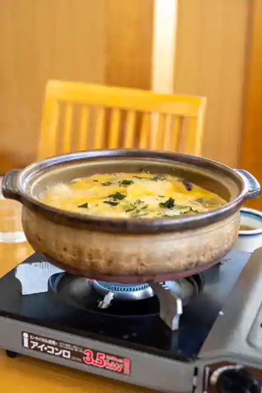
Otsu Gyokyo Chokuei Shijo Shokudo
中郷サービスエリア（下り線）フードコート
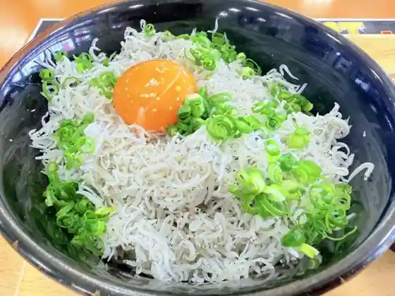
Nakago Sabisueria (Kudari Sen) Fudokoto
久利山
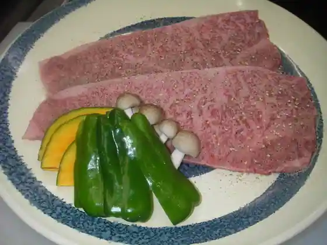
Kuri Yama
麺屋 まるみつ
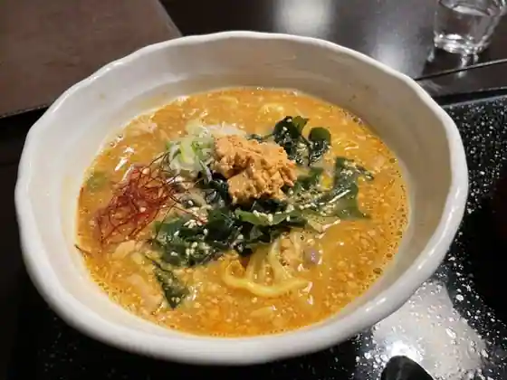
Men Ya Marumitsu
地魚料理 なぶら
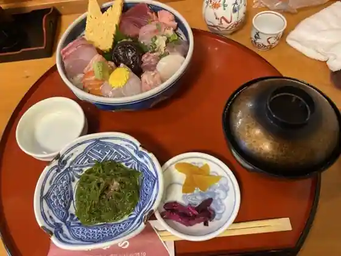
Jizakana Ryori Nabura
やま都うどん
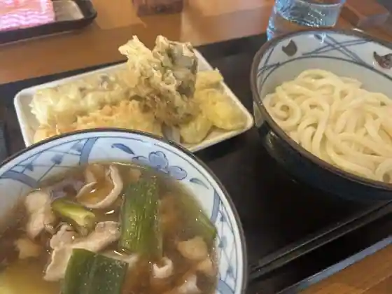
Yama Miyako Udon
石水
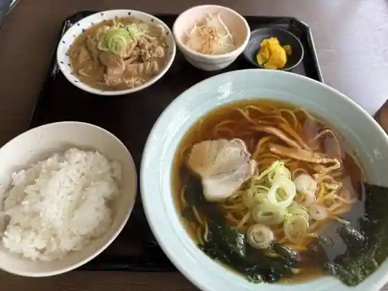
Ishi Mizu
船頭料理 天心丸
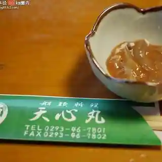
Sendo Ryori Tenshin Maru
一ツ木
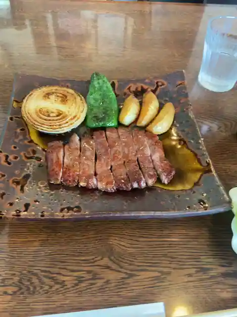
Ichi Tsu Ki
やまみつ
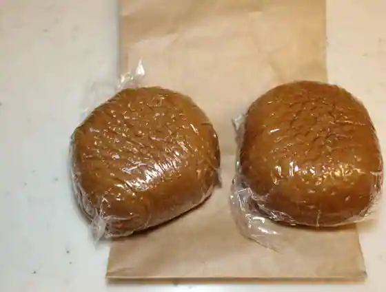
Yamamitsu
中郷サービスエリア（上り線）フードコート
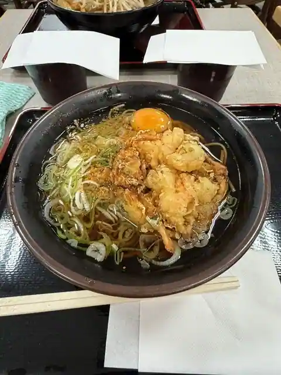
Nakago Sabisueria (Nobori Sen) Fudokoto
中華料理 青島
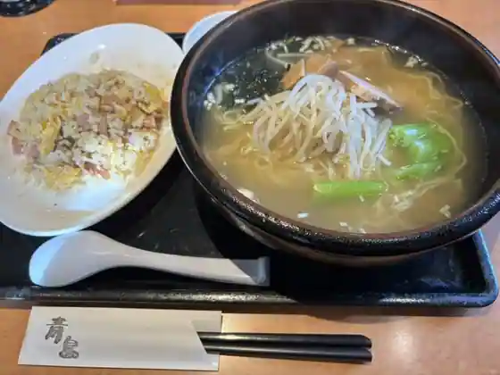
Chukaryori Aoshima
秀寿司
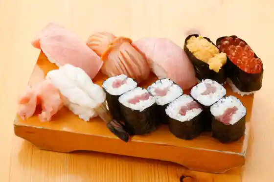
Hidehisa Tsukasa
磯原シーサイドホテル
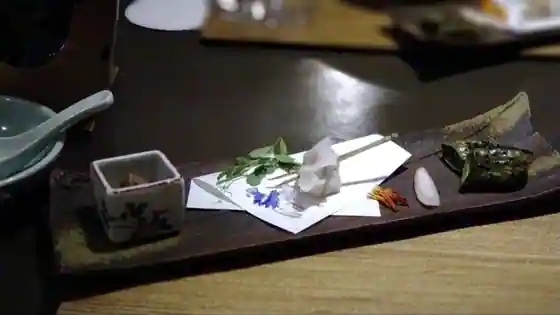
Isohara Shisaido Hotel
そば処 大和
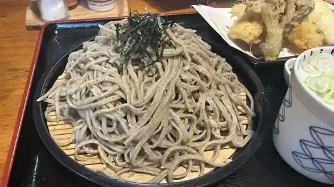
Soba Tokoro Yamato
五浦観光ホテル 別館 大観荘
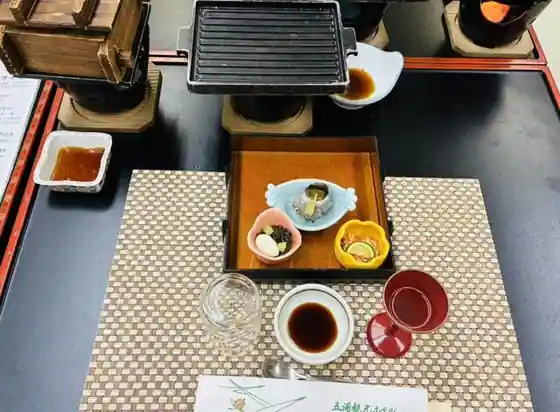
Itsura Kanko Hotel Bekkan Daikanso
ラーメン利尻
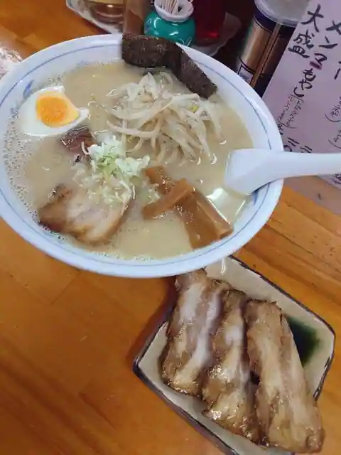
Ramen Rishiri
茨城豚骨 天心
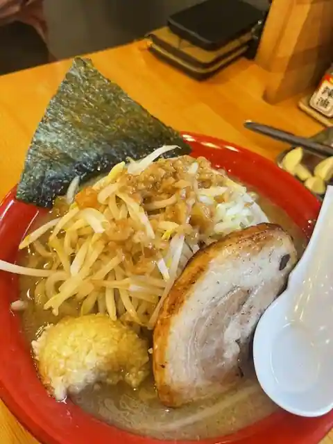
Ibaraki Tonkotsu Tenshin
モリモア
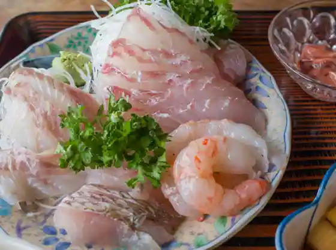
Morimoa
タリモ珈琲
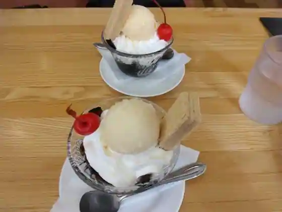
Tarimo Coffee
Sights
Rokkaku Do (Ibaragidaigaku Itsura Bijutsu Bunka Kenkyusho)
Chiimurabo Yukoku Onden Ato
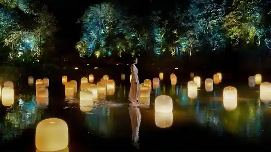
Uguisu Tani Onsen Take no Ha
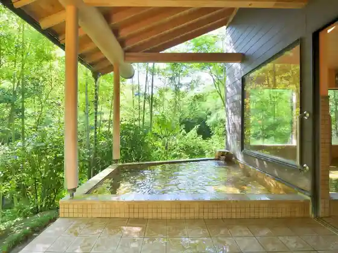
Flower Garden Gorge
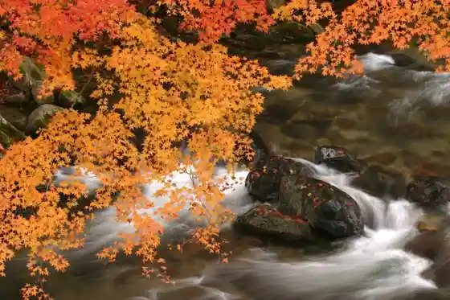
Ni Tsu Shima Isohara Coast
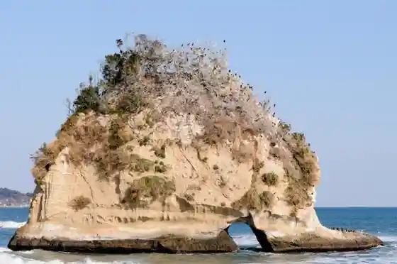
Nakago Onsen Tori Yanse
Flower Garden Shrine
Otsu Gyokyo Chokuei Market Shokudo
Ibarakiken Tenshin Kinen Itsura Art Museum
Noguchi Ujo Memorial Museum
Itsura Misaki Park
Garasu Workshop SILICA (Shirika)
Isohara Ni Tsu Shima Beach
Ohama Maru Sakana Chikara
Toshimaya Tsukihama Baths
Otsu Minato
Kitaibaraki Ajisai Forest
Yu no Ami Onsen Shika no Yu Matsuya
Resutoran Matsuno Ya
Kameya Chi Marsh
Kitaibaraki Gyogyo History Museum Yo Soro
Resutoran Tsubaki
Masubuchi Sakana Sono
Maunto Akane
Kazoku Kyanpu Village Flower Garden Oto Campground
Sendo Ryori Tenshin Maru
Morimoa
Sarugashiro Gorge
Noguchi Ujo Seika Museum
Onsen no Yado
Joren Tera
Shokusai Taishin
O Shokuji Tokoro Yamaguchi Ya
Ju Ishi Hori
Soba Dojo Sakura no
Okita Gorge
Hirakata Minato Tsuribune Ei Noboru Maru
Nature Shoku Resutoran Panpukin
Ibaraki Pashifikkukantorii Kurabu
minsyuku
Hidehisa Tsukasa
Joren Tera Gorge
Hirakata Meika Kashi Workshop
JA Ibaraki Hitachi Itsura Nosambutsu Chokubai Tokoro
JA Ibaraki Hitachi Flower Garden Saimaru Nosambutsu Chokubai Tokoro
Sushi Kappo Takasago Ya
JA Ibaraki Hitachi Kitaibaraki Chokubai Tokoro